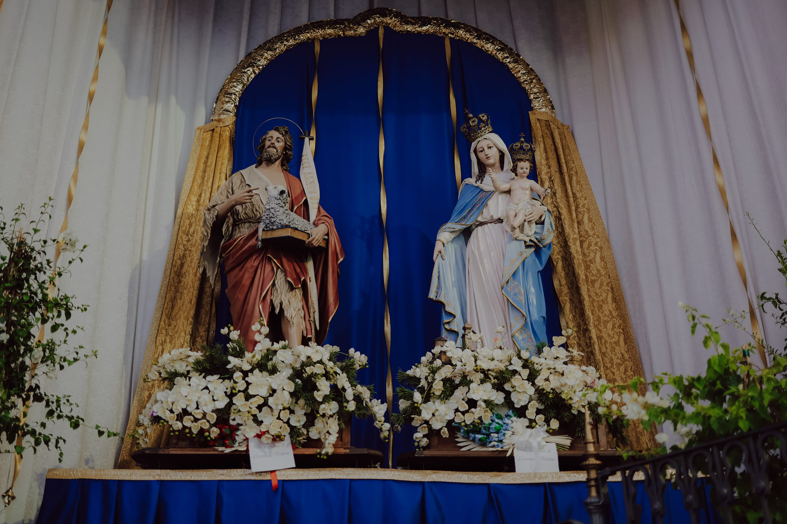

La Festa Patronale di Fasano rappresenta uno degli eventi più importanti dell'anno per tutta la comunità cittadina.
La celebrazione è dedicata ai Santi Maria, Giuseppe e Giovanni, protettori della città.
Durante i giorni della festa le strade si riempiono di luminarie, spettacoli musicali e migliaia di visitatori.
La festa unisce tradizione religiosa e cultura popolare.
• Processioni religiose
• Concerti bandistici
• Luminarie artistiche
• Fuochi d'artificio
• Stand gastronomici